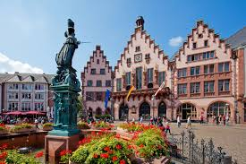

Top three activities to do at Frankfurt am Main
Römer and Römerberg Square
Historic town hall and charming square with half-timbered houses.
Städel Museum
Famous art museum featuring European masterpieces from past to present.
Palmengarten
Beautiful botanical garden with themed gardens and tropical greenhouses.